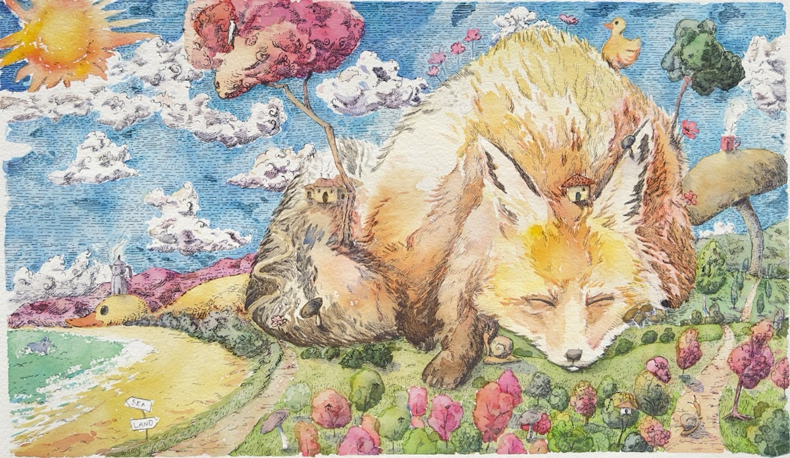

ArtproDucktion
The slow search for meaning
Art · Photography · Tarot · Books
The Bangkok art studio of Danaya Buntasnakul, a painter whose work moves between landscape, abstraction and illustration. Four strands of his work live here together: paintings and exhibitions, portrait photography, tarot, and books.
PaintingsART

Watercolour, ink and oil paintings · nine solo exhibitions · original works with a certificate of authenticity
PortraitsPHOTOGRAPHY

Your image, your self · portrait photography and commissioned portrait sessions
Reading the cardsTAROT


Not predicting, but reflecting together · the 78-card Dan Tarot deck and the book Poed Phai Fang Jai
WritingBOOKS
Books by Dan

Poed Phai Fang Jai (Open the Cards, Listen to the Heart) · a gentle way into tarot, no memorising needed · by Din Dan · in Thai
Contact · Social